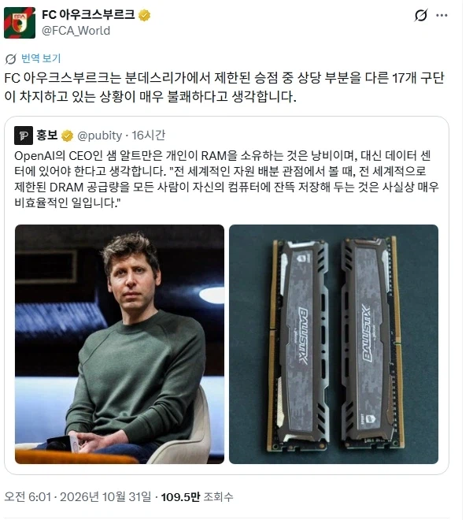

우리팀 말고 분데스리가 나머지 팀들이 승점을 먹는것은 매우 비효율적인 일입니다.

우리팀 말고 분데스리가 나머지 팀들이 승점을 먹는것은 매우 비효율적인 일입니다.
병신같은 개소리하니까 똑같이 개소리로 돌려주는 거잖아
개붕이도 효율을 위해 추천을 독식했구나
개추가 댓글에 분산되는 것은 비효율적이라 생각하며 본문에 개추가 집중되어야 합니다.
아니... 시즌 9위가 저런 말을...!?
트럼프 내각도 그렇고 팀쿡도 그렇고 미국 상류층 게이들은 왤케 인성 좆박은 호로새끼들이 많을까
인성 좆박은 호로새끼들이 올라가기 좋은 사회라서가 아닐까
쟤는 23년도에도 한국와서 램 쫌 더만들어달라고했음 애플잘못이지뭐
쟤가 한국 램 40-50% 계약 딴거보면 더 만들라고한게 사실상 대부분 자기가 가져가려 했던거임
쟤만큼 나쁜새기가 없음 "대를 위해 소를 희생하세요, 개인용 램은 낭비잖아요? 모두를 위한 AI에 투자하는게 맞다"
이러는데 합리화에 불과함, 쟤는 사람들이 컴퓨터 없어서 노트북 사서 간신히 컴퓨터 하는줄도 모를거야
근데 당연히 더 만들라고 한 게, 자기가 가져가려고 하는 거 아닌가?.....나는 안 가져갈건데 더 생산하세요. 이러는 게 더 이상한데.
그리고, 저 발언이 갑자기 게이머들 비판하려고 나온 말이 아니라, 인터뷰어가 GPU랑 메모리 가격이 급등했느데 왜 공급이 빨리 늘지 않는 지 물어봤고, 알트만은 메모리 업체들이 과거 공급 과잉했다가 큰 손실을 봐서 설비 투자에 보수적이라고 답변함.
그래서 다시 인터뷰어가, 오픈소스 모델들이 발전하면 개인 PC에서도 AI를 실행할 수 있으니까 데이터센터가 덜 필요해질 것 같다는 전망에 대해서, 개인 PC에선 많이 쓰지 않지만, 데이터센터에선 하루종일 쓸 수 있으니 비효율적이다. 즉 데센의 중요성 혹은 클라우드 컴퓨팅의 장점에 대해서 말 한 것 뿐이잖음.
물론, 얼핏 들으면 뭔개소린가 싶으니까 알트만이 표현이 잘못된 건 맞지만, 게이머들 램 불필요하다. 전부 다 데센에 써야한다. 거나 게이머를 비하한 발언은 아니지 않나
가장 많이 계약을 따낸것도 AI였고, 이사람들이 램 시장 흐름 바꾼건 부정할 수 없음.
아니라고 생각한다면 그럼 도대체 왜 램값이 올랐나 생각해봐, 수요 공급이 안맞는거고 그 수요를 부른건 누구임? 개인이 아니라 기업들임. 알트만 뿐만 아니라 현재 데센 짓는다고 무리하게 램을 사들여서 개인에게 전혀 램 부품 공급이 안되잖음.
난 게이머들만 말한게 아님, PC, 스마트폰은 모든 사람에게 필요한건데 그 핵심 부품을 기업의 기술을 발전시키기 위해 거의 독점하다시피 램 물량을 가져감, 그럼 진짜 PC, 폰 필요한 사람들은 어찌함?
내 주변에도 PC 못사고 노트북 산 사람들이 수두룩한데
뭔 ㅅㅂ 병신 소리야?
전 세계적인 자원 배분 관점에서 볼 때,
니 통장엔 필요 이상의 돈이 쌓여있는거 같은데 좀 나눠줄래?
ㄹㅇㅋㅋㅋ
ㄹㅇ ㅋㅋㅋㅋㅋㅋ
겜돌이들 디램 다 걷어도 데센 몇개 못지을텐데 진짜 별 쓸데없는 시비를 걸고 사서 논란 만드네 ㅋㅋ
노린건가
올해 역전되는거지 작년까지만 해도 소비자용 디램 출하량이 압도적이었을걸
오우 의외네 ㄷㄷ
사회 효율을 위해 자동차를 하나의 기업이 전부 소유하고 사람들의 필요에 따라 배분하면 더 효율적이지 않을까? ㅋㅋㅋㅋ
집도 그렇게 하고, 음식도 그렇게 하자. 락원이 따로 없겠네
실제로 땅 좁은 도시국가들은 차 함부로 못 사잖아
차고지 증명제 같은거하고 쟤가 말하는 '나는 존나 가치있게 재화를 사용하는데 다른 애들은 안그런거 같으니 나한테 몰아줘야한다'하는 거랑은 다른 문제 아니냐.
거 게이머들이 가져가는 렘 얼마나 된다고 왜 굳이 사서서 욕을 쳐 먹을까
긁어부스럼ㅋㅋ ㅅㅂ 딴 빅테크가 긁어간건 입에 담기 그렇고. 그냥 이놈이나 저놈이나 만만한게 겜돌이지
네 통장에 쌓아둔 돈은 씨발아
싹 다 털어서 데이터센터에 꼬라박던가
병신같은소리 하고 자빠졌네 공산당같은새끼
리오같은련
재벌들이 지들만 돈 존나많은건 효율적인가 씹새가ㅋㅋ
샘알트먼은 항상 혁신을 말하는애인데
저런말하는이유가 미래에는 데이터센터에서 램 집중하고 단말기에서 공급받는 식으로 하면 사람들은 클라우드 구독제로 저렴하게 렘 돌릴 수 있음
저거 각이 보이니까 저런 말 하는거같은데
기업이 저렴하게 해 줄까? 싶음 ㅋㅋ
이익이 충분히 나오면 가격을 내릴것입니다
저게 대세가 될 수 있는건데 넌 안쓸거야?
지금도 Llm 구독제로 쓰는 게 훨씬 유리한데
미래에는 더 좋은 렘하고 더 좋은 장비들을 쓰게 될 것이다를 전제로 깔고 가야지
나도 쓰기야 쓰는데 나중에 시장 장악하거나 필수제가 된 상태에서 기업이 미쳤다고 가격을 내리겠냐고
가격은 늘 다운되는건데
시장이 사용하는 퀄리티 자체가 올라가서 가격이 비싸보이는거지
지금 AI 구독제의 사실상 경우 출혈경쟁 하면서 적자운영 상태인데 이게 쭉 갈리는 없고 적자 해결하려면 가격을 올리는건 필연적인데
구독제에서 가격이 늘 다운되는 분야가 있음?
콘솔게임도 계속 가격이 증가하고 넷플릭스, 유튜브, 어도비 등등 다 구독제 비용 올라가는데
기업이 추구하는건 이윤이 맞지
가격은 계속 올리고 싶어하지
넷플릭스 유튜브 어도비 이런애들도 뭔가를 끊임없이 개발 하잖아
콘텐츠 질도 계속해서 올라가는 중이고
시장은 일정수준 이상의 수요가 생기게 되면 그쪽으로 몰려서 개발을 하게 되잖아
그런데 몰리중에 공급보다 수요가 강하면 일시적으로 가격은 올라가긴 하는데 나중에 개발 이루어지고 나면 종합적으로 보았을때 같은 상품 기준으로 항상 기존 것보다는 가격이 낮아지게 되어있어
자원이 한정되어있거나 이런 예외들은 제외하고.
개발 또는 대량생산을 통해서 가격은 낮아지거 유통은 늘어나는 게 궁극적인 시장의 원리인데.
근데 구독제 기업들은 대신해서 버전을 올리면서 경쟁하면서 퀄리티를 올리고 가격을 더 받아가는 구조인잖아
동일한 버전 기준의 퀄리티 상품으로는 가격이 낮아져있지
수요가 생기면 여러 기업들이 몰려서 경쟁하고 그러면서 동시에 가격 경쟁도 발생하면서 가격은 내려감
하지만 경쟁이 어느정도 낮아지며 살아남은 일부 기업들은 어느정도 시장을 장악하면 그때부터 가격은 올라감
대표적인게 카카오와 쿠팡임
종합적으로 보면 항상 기존보다 가격이 낮게 된다는데 it 관련 구독제중에서 어떤 상품이 가격 낮아졌음?
유튜브 프리미엄도 레드로 시작해서 10년이 넘었지만 계속 우상향임
생산 수요 곡선 이야기를 꺼낸다면 그건 대량생산을 통해 가격이 낮아지는건 맞지만 그거는 이상적인 상황을 기준으로 함
에덤 스미스의 보이지 않는 손처럼 인간의 욕심이나 다른 요인을 전부 배제한 상황일 때 적용 가능한 그래프임
우리나라가 우유 안팔린다고 가격 낮추는거 봤음? 너가 말하는 생산 수요 곡선에 의하면 가격이 낮아져야함
하지만 오히려 협회의 개입으로 가격은 계속 오르고 있네?
통신 3사가 망사용료로 돈 벌면서 시설 투자는 좆도 안하지만 가격 내림??
가격상승요인은 특정하게 짚어서 뚜렷하게말할 수 없어
세계적인 물가상승 인플레이션도 일어나고 있잖아
화폐는 계속 찍어내고 있고 그만큼 기업들도 물가상승된만큼 가격 올려야 살아남을 수 있는 거고
It관련은 버전을 올리면서 가격도 올리고 있다고 이전 댓글에서도 말을 했고
카카오 우유나 통신사 이런거는
우리나라 쪽은 구조상 독점이나 담합 카르텔이 강한 나라이고
버전이 올라가면서 가격도 올라간다와 너가 말한 '가격은 늘 다운되는건데' 이게 어떻게 양립하는지 이해가 안가는데
가격이 올라도 성능도 증가했으니 안올라간거나 마찬가지다 라는 말은 말장난 수준 같은데
시비걸지말고 이해안되면 지피티한테 말해라
가격이 올랐는데 이걸 성능도 올랐으니 가격은 안 오른거나 마찬가지다 하는건 이게 정신승리급 못 본 척 하기랑 뭐가 다른데
그래서 사람들이 다 가격 오른거에 납득함? 대부분 성능이 올랐다 하더라도 결국 비용도 증가해서 납득 못 할 껄? 플스 유저들에게 물어봐라 플스플러스 가격이 코로나 전과 비교하면 2배나 상승한 만큼 성능이 2배 좋아졌으니 체감 없을꺼다 라고 말하면 뭐라 답할까
이거 완전 사회주의네요
알트만이 말한거 원본 보니까 로컬 모델용으로 램 많이 사는거 말하는거 같던데
뭐 그것도 의아한 발언이라고 볼순 있겠지만 참 선동하기 쉬워
누가 램을 어떤 목적으로 사든말든 저따위말을 할 이유가 ㅋㅋ
로컬 돌리는 사람들은 검열이나 내용 가져가서 학습하거나, 신고하거나 하는게 싫은 사람들일텐데 기업이 셋중 하나라도 안할수 있나? 하면 그것도 아니잖아. 성능차이 심하고 설령 로컬이 기업 서비스보다 많이 비싸더라도 로컬에 대한 수요는 계속될수밖에 없음.
뭔상관이여 둘이
쟤가 구단주임?